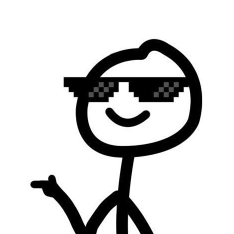
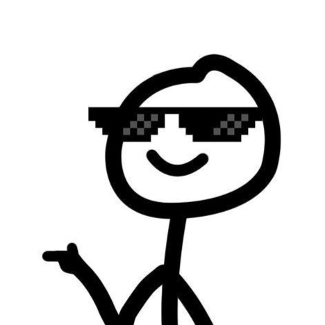

À propos
Je suis un passionné d'astronomie et j'ai pour passe-temps de photographier les astres.
Depuis des années, je capture les merveilles du ciel nocturne avec mon appareil photo et mes télescopes. Mon objectif est de partager ces incroyables images avec vous et de vous inspirer à lever les yeux vers les étoiles.
À travers ce site, je vous invite à découvrir des photos de galaxies lointaines, de nébuleuses colorées et de planètes de notre système solaire. Chaque image est le fruit de nombreuses heures de patience et de passion.
N'hésitez pas à me contacter pour en savoir plus sur l'astrophotographie ou pour partager vos propres photos.
Mes créations
Voici quelques images que j'ai pu moi-même faire à l'aide d'un appareil photo fixe sur un télescope.
Etant encore débutant, j'ai pas mal de choses à améliorer avant d'avoir de très bons rendus mais je suis tout de même fier de pouvoir pratiquer ma passion 😁